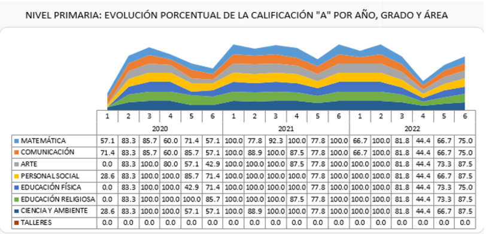
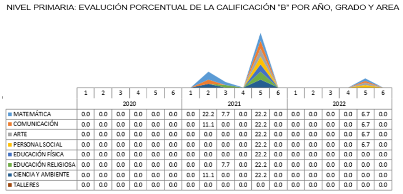
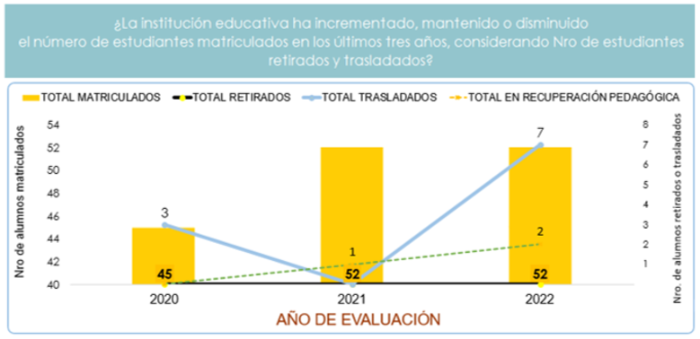
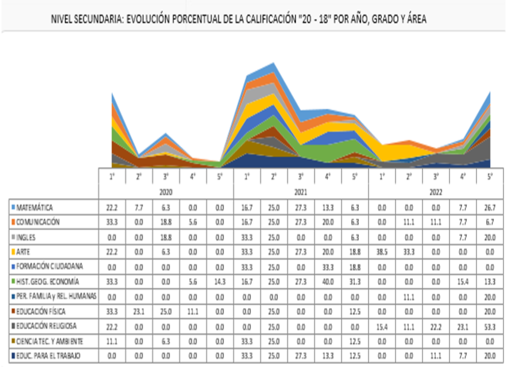
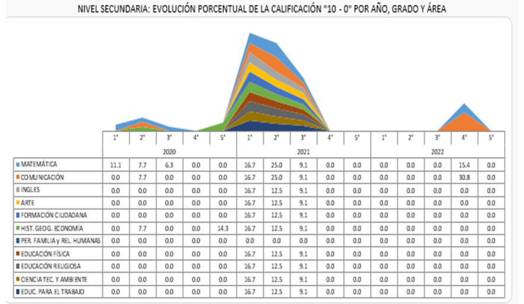
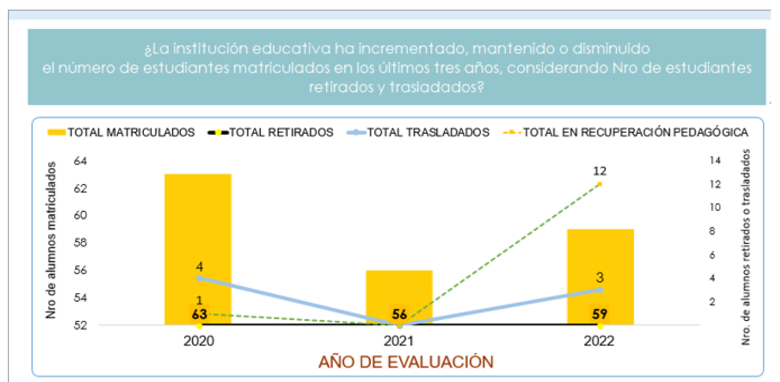

DIMENSIÓN ESTRATEGICA
Referida a la generación de una orientación clara y compartida de
los fines y propósitos educativos de la IE, a partir de la cual se formulan objetivos y
metas a través de los instrumentos de gestión. El propósito de esta gestión es lograr una
visión integral de los recursos, oportunidades y necesidades propias de cada comunidad
educativa y de la IE, para lo cual debe considerar de cerca las otras dimensiones de
gestión. El principal criterio orientador de la dimensión estratégica es el cumplimiento de
los compromisos de gestión escolar por resultados (CGE 1 y CGE 2):
CGE 1: Desarrollo integral de las y los estudiantes
CGE 2: Acceso de las y los estudiantes al SEP hasta la culminación de su trayectoria
educativa.
Esta dimensión es liderada por el Director y el CONEI y operativizada por nuestra Comunidad
Educativa.
.

EL CONEI es un órgano de participación, concertación y vigilancia ciudadana, cuyos miembros fueron elegidos para una vigencia de dos años (2021- 2022), reconocido mediante Resolución Directoral N° 005- 2021.
RESULTADOS DE GESTIÓN 2019- 2020- 2021
NIVEL PRIMARIA:


GRADO DE EFICIENCIA INTERNA
NIVEL SECUNDARIA:

GRADO DE EFICIENCIA INTERNA
INSTRUMENTOS DE GESTIÓN (II.GG):
Proyecto Educativo Institucional (PEI): Orienta la gestión escolar según corresponda en el mediano plazo (2022-2026)
Plan Anual de Trabajo (PAT 2022): Concreta los objetivos y metas del PEI e incluye las actividades mínimas definidas sectorialmente para el desarrollo del periodo lectivo.
Proyecto Curricular de la Institución Educativa (PCI 2022): Orienta los procesos pedagógicos de la Institución Educativa para el desarrollo de los aprendizajes establecidos en el CNEBR, alineando a lo establecido en el PEI, así como las orientaciones de los modelos de servicio educativo.
Reglamento Interno (RI 2022): Regula la organización y funcionamiento integral de la I.E para promover una convivencia escolar democrática y un clima favorable a los aprendizajes.
DIMENSIÓN ADMINISTRATIVA
Lleva a cabo las prácticas establecidas por el CGE 3.
Esta
dimensión es liderada por el Comité de gestión de condiciones operativas y operativizada por
el personal de la IE que participe de las tareas involucradas.
CGE 3: Gestión de las condiciones operativas orientada al sostenimiento del servicio
educativo ofrecido por la IE.
Comité de Gestión de Condiciones Operativas: aprobada según la R.D. N° 008-2022
Plan de Trabajo del Comité de Gestión de Condiciones Operativas, aprobada según la R.D. N°
016-2022
.

1) Seguridad y Salubridad
1.1. I.E. espacio seguro para la integridad física de los estudiantes.
1.2. I.E. libre de riesgo sanitario para los estudiantes
1.3. I.E. acondicionada ante situaciones de emergencia y desastres
1.4. I.E. organizada para actuar ante situaciones de emergencia y desastres
1.5. Personal organizado para la seguridad de los estudiantes durante los momentos críticos
1.6. Intervención del personal ante situaciones que afectan la seguridad de los estudiantes
1.7. Prevención de situaciones que amenacen la salud, seguridad o integridad de los estudiantes.
2) Gestión de los recursos educativos
2.1. Distribución oportuna y cobertura del material educativo para los estudiantes enviado por el MINEDU
2.2. Promoción del uso del material educativo enviado por el MINEDU
2.3. Promoción del uso de espacios y tecnología con finalidad pedagógica
3) Matrícula y preservación del Derecho a la Educación
3.1. Matrícula y permanencia de estudiantes sin condicionamientos
3.2. Acceso al servicio educativo sin condicionamientos
3.3. Cumplimiento del horario de trabajo del personal docente y directivo
3.4. Registro oportuno de matrícula en SIAGIE
3.5. Implementación de estrategias de apoyo para permanencia de estudiantes en situaciones de vulnerabilidad
4) Gestión Transparente de los Recursos Financieros
4.1. Integridad en la gestión de los recursos financieros de la I.E
4.2. Constitución del comité de gestión de condiciones operativas
4.3. Generación o captación y uso de los recursos financieros de la I.E. según normativa
4.4. Registro oportuno en el sistema de información de mantenimiento
4.5. Gestión de recursos propios según lo planificado y rendición de cuentas.
DIMENSIÓN PEDAGÓGICA
Lleva a cabo las prácticas establecidas por el CGE 4.
Esta
dimensión es liderada por el Comité de gestión pedagógica y operativizada por el personal de
la IE que participe de las tareas involucradas.
CGE 4: Gestión de la práctica pedagógica orientada al logro de aprendizajes previstos en el
perfil de egreso del CNEB.
Comité de Gestión de los Procesos Pedagógicos: Aprobada según RD N° 009-2022
Plan de Trabajo de la Comisión de Gestión de los Procesos Pedagógicos: Aprobada según R.D.
N° 014-2022.
1) Planificación Curricular
1.1. Planificación de las Experiencias de Aprendizaje.
1.2. Apoyo pedagógico para la planificación curricular
1.3. Planificación de sesiones o actividades de aprendizaje
1.4. Conocimientos suficientes para brindar asesoría pedagógica
1.5. Espacios para la planificación colegiada.
2) Monitoreo de la práctica pedagógica en el aula
2.1. Muy alto cumplimiento del monitoreo
2.2. Organización de información obtenida en el monitoreo
2.3. Análisis de los resultados obtenidos en el monitoreo
3) Fortalecimiento del trabajo docente
3.1. Participación en acciones formativas promovidas por la UGEL, DRE, MINEDU
3.2. Acciones para el fortalecimiento de competencias docentes
3.3. Retroalimentación a la práctica pedagógica
3.4. Acciones para el fortalecimiento de competencias docentes basadas en un diagnóstico
3.5. Fortalecimiento de las prácticas pedagógicas mediante el trabajo colegiado.
4) Seguimiento de los aprendizajes
4.1. Gestión de entrega oportuna de informe de progreso de las competencias.
4.2. Informes de progreso con niveles de logro
4.3. Generación de espacios para el análisis y la reflexión de los aprendizajes, e identificación de oportunidades de mejora.
4.4. Estrategias para la mejora de aprendizajes elaboradas sobre la base del análisis de los resultados del avance de los estudiantes.
DIMENSIÓN COMUNITARIA
Lleva a cabo las prácticas establecidas por el CGE 5. Esta
dimensión es liderada por el Comité de gestión del bienestar y operativizada por el personal
de la IE que participe de las tareas involucradas.
CGE 5: Gestión del bienestar escolar que promueva el desarrollo integral de las y los
estudiantes.
Comité de Gestión del Bienestar: aprobada según RD N° 010-2022
Plan de Trabajo del Comité de Gestión del Bienestar aprobada según RD N° 017-2022
1) Participación de la Comunidad Educativa
1.1. Constitución de instancias formales de participación de la comunidad educativa
1.2. Promoción de participación de las familias
|1.3. Liderazgo democrático del director en la gestión de la participación de docentes
1.4. Funcionamiento del CONEI
2) Relaciones Interpersonales en la Institución Educativa
2.1. Promoción de las relaciones interpersonales entre el personal docente de la I.E.
2.2. Muy buenas relaciones interpersonales del director con los docentes de la I.E.
2.3. Acciones para que las relaciones interpersonales en la I.E. sean muy buenas
3) Gestión de la Convivencia Escolar.
3.1. La I.E. cuenta con normas de convivencia aprobadas
3.2. La I.E cuenta con el libro de registro de incidencias y personal responsable del registro en el portal SISEVE
3.3. Identificación de situaciones de violencia escolar
3.4. Normas de convivencia elaboradas con integrantes de la comunidad educativa y difundidas entre ellos
3.5. Atención de situaciones de violencia escolar en la I.E.
3.6. Acciones para la prevención de situaciones de violencia escolar